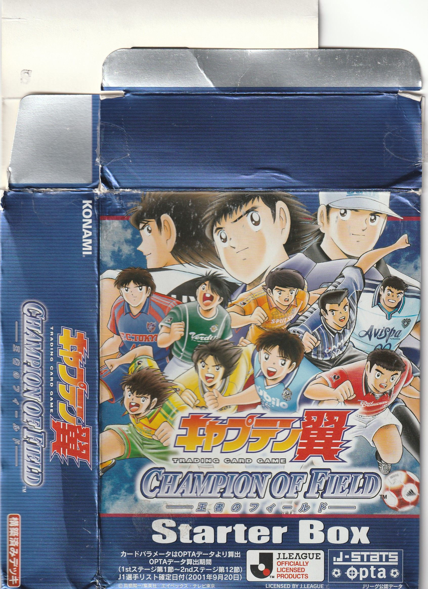
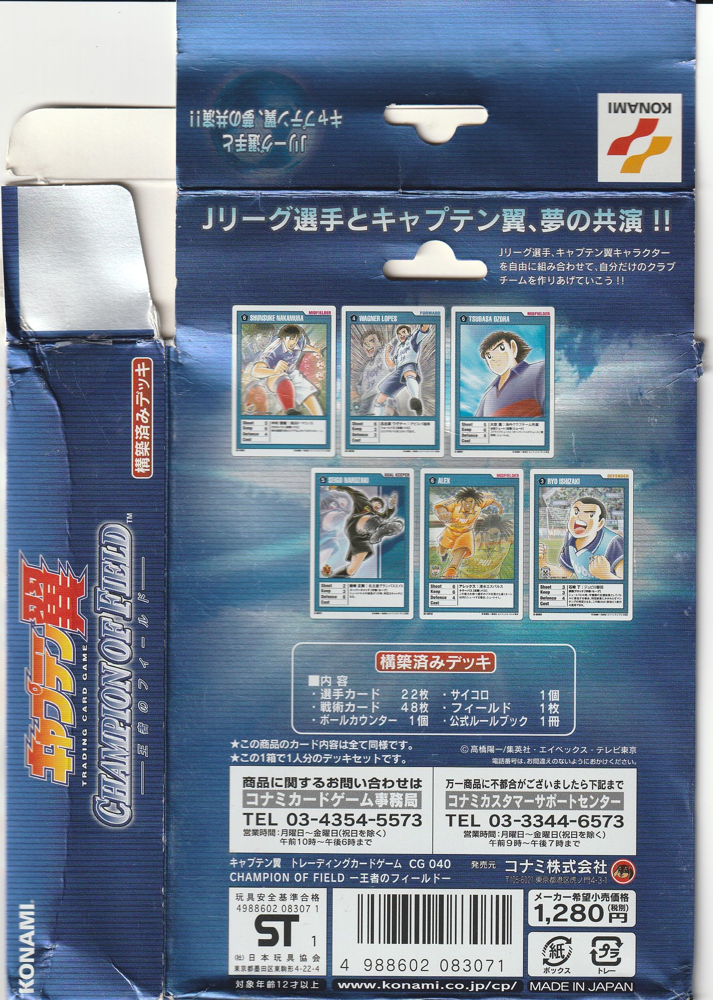
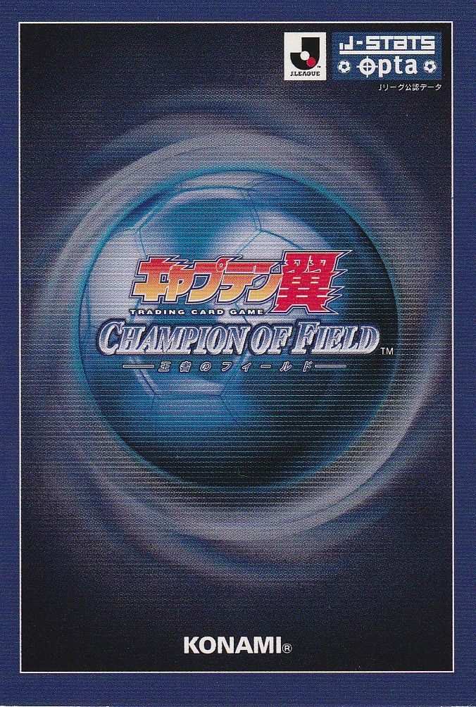
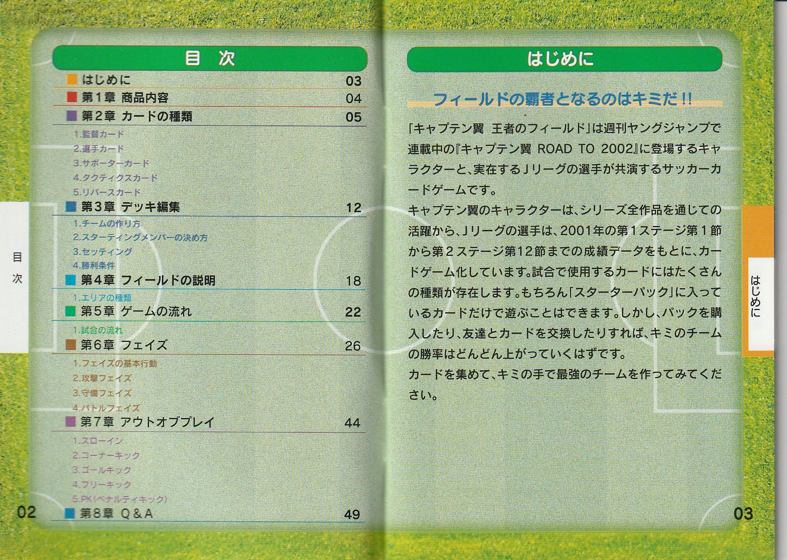
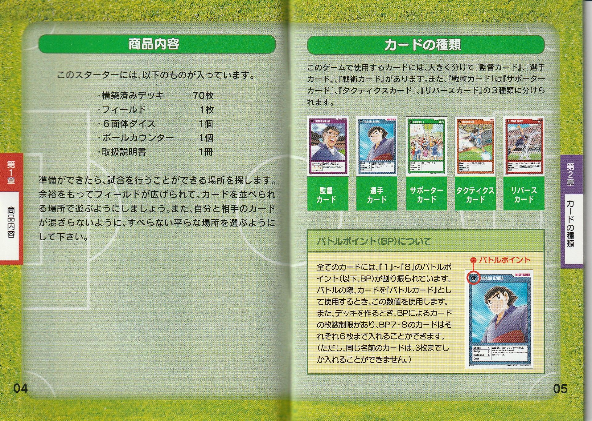

《キャプテン翼 CHAMPION OF FIELD —王者のフィールド—》KONAMI · CAPTAIN TSUBASA TCG · CG 040 · 2002
《CHAMPION OF FIELD —王者のフィールド—》是 KONAMI（科乐美）于 2002 年 3 月推出的《队长小翼》主题 实体集换式卡牌游戏，依托漫画《ROAD TO 2002》篇与 J.LEAGUE 官方授权， 把《队长小翼》的角色与真实 J 联赛球员放进同一套卡牌对战。
本页分为 商品情报 / 玩法指南 / 卡牌图鉴 三个版面，可用上方页标签切换。 卡牌图鉴收录 MediaFire 玩家扫描包中的 116 张卡面（起始卡组 60 ＋ 补充包 56）， 以原图呈现，暂不设资料详情弹窗。资料取自官方实物扫描与爱好者目录站，站内零外链。
商品情报
KONAMI 于 2002 年发行的《队长小翼》集换式卡牌游戏——CHAMPION OF FIELD 王者のフィールド。
商品概要
| 正式名称 | キャプテン翼 トレーディングカードゲーム「CHAMPION OF FIELD —王者のフィールド—」 |
|---|---|
| 发行 | コナミ（KONAMI）· 产品编号 CG 040 · MADE IN JAPAN · 条码 4988602 083071 |
| 发售 | 基本セット 2002 年 3 月；ブースター Vol.2 日本代表 2002 年 5 月 |
| 卡种数 | 394 種（基本セット 344 ＋ ブースター Vol.2 50） |
| 价格 / 年龄 | 起始盒 1,280 円（税別）· 対象年齢 12 岁以上 |
| 版权 / 授权 | ©高橋陽一／集英社・エイベックス・テレビ東京 J.LEAGUE OFFICIAL LICENSED PRODUCTS · J-STATS、OPTA 数据协办 |
| 数据基准 | 漫画角色按全系列表现设定数值；真实球员按 2001 赛季 J1 联赛（1st 第 1 节～2nd 第 12 节）OPTA 成绩设定 |
商品图片



商品线
| 产品线 | 发售期 | 卡种数 | 发售形式（封入枚数／价格） |
|---|---|---|---|
| 基本セット | 2002/3 | 344 種 | 構築済みスターター（70 枚 / 1,280 円）、ブースター（10 枚 / 300 円） |
| ブースター Vol.2 日本代表（2002 年度版） | 2002/5 | 50 種 | ブースター（10 枚 / 300 円） |
※「394 種」为卡种数，非单盒实际张数。起始盒内含構築済みデッキ 70 枚（選手 22 ＋ 戦術 48）、球场纸 1 张、6 面骰 1 个、球权指示物 1 个、公式规则书 1 册；合法组牌为 60 张（監督 1 ＋ 首発 11 ＋ 牌库 48）。
产品谱系
| 时间 | 作品 | 形态 | 关系 |
|---|---|---|---|
| 2002-02-21 | キャプテン翼 栄光の軌跡 | GBA 游戏 | 先出；TCG 玩法的电子原型 |
| 2002-03 | 实体 TCG 基本セット（本作） | 实体卡牌 | GBA 之后商品化 |
| 2002-05 | ブースター Vol.2 日本代表 | 实体卡牌 | 本作扩充包 |
| 2002-07 | パーフェクトイレブン | 实体卡牌 | 姊妹作，规则同源；J 联赛官方，全真实球员照片（272 種） |
资料来源：KONAMI 官方实物扫描（规则书 / 盒背）＋ card.g1.xrea.com 爱好者 TCG 目录站（文責ＤＯＰ）。站内仅作纯文本标示，无外链。
玩法指南
2 人对战、以球场网格 ＋ 6 面骰模拟足球比赛；规则整理自 xrea 目录站（王者のフィールド）与官方规则书扫描。
基本構成（组牌与胜负）
胜利条件
下半场结束时得分多者获胜；平局则通过 PK 战决胜。
组牌
- 队伍恰好 60 张：監督 1 张 ＋ 首発選手 11 张 ＋ 牌库 48 张。
- 首発选手须为 BP 6 以下，且位置数量比例须与監督卡记载一致。
- 同名卡最多 3 张；BP 7 的卡合计最多 6 张；BP 8 的卡合计最多 6 张。
- 牌库洗牌后分为前半用 / 后半用各 24 张。
其他准备
- 球权指示物（Ball Counter）1 个、6 面骰适量；游戏间交换卡：无。
- 初始手牌 0 张（上限 6，每回合补充）；无重抽、无首抽限制。
场地
共用球场 5×9 ＝ 45 区，另加各自球门区；1 区最多 4 名选手（同一玩家最多 3 名）。 主要区域：角落区、罚球区（门前 3 区 ×2）、边区、自由球区（中央为中央圈）。
游戏流程（回合结构）
开始准备
- 各自的監督卡置于场上「主教练（Head Coach）」位。
- 首発选手按监督卡位置比例初始配置。
- 各自洗牌，分前后半各 24 张；球标置中心圈。
- 决定球端；持球方为进攻方开球。
回合结构（每半场反复）
① 攻击阶段（攻击方）恢复（获 4 点成本）→ 抽牌（补至 6）→ 主要步骤（等级提升 / 设置·弃反转卡 / 支援卡 / 战术卡 / 移动 / 带球 / 传球 / 射门＝结束）。※ 攻击方须把球至少移动 1 区，否则不能结束。
② 防守阶段（防守方）恢复 / 抽牌同上 → 主要步骤另可 抢断 / 传球拦截（均＝结束）。
③ 战斗阶段 仅在射门 / 抢断 / 传球拦截引发时进行（见「关键判定」）。
半场休息与 PK
前半牌库耗尽后进入半场休息：手牌、前半牌库、弃牌堆除外，换后半牌库，选手重新初始配置，开局守方转为进攻方开球。 后半战结束仍未分胜负则进行 PK 战：各选 5 名选手互射，以射门力＋骰子对门将防守力＋骰子比大小定胜负。
规则细则（成本 / BP / 判定）
成本（Cost）
每攻击/防守阶段供给基本 4 点（卡片效果可额外获得，阶段内累计上限 6）；跨区 1 区 1 成本；战术卡耗记载值； 移动最多 2 区；射门按含球门距离；传球同区为 1 成本；抢断/拦截各 +1。阶段结束成本全废。
战斗点数（BP，1～8）
战斗阶段双方各将手牌 1 张背面作「战斗卡」，翻开后其 BP 加到己方选手相应属性；无手牌按 BP 0 处理。 特殊规则：己方战斗卡 BP 1、对方 BP 8 时，BP 1 方无条件获胜。
判定
- 射门：射门选手「射门力」vs 对方门将「防守力」——攻方高 2 点以上 → 进球得 1 分；守方高 2 点以上 → 门将接球、球门球；差值 ≤1 → 门将拳击解围，落点以骰子判定。
- 抢断 / 传球拦截：抢断/拦截方「防守力」vs 对方「控球力」，大者得球；平局以骰子判定。
卡片构成
- 監督卡（无需成本）：玩家的分身、组牌基点，记载首発构成比例，多带常驻效果。
- 選手卡（行动需成本）：三属性 Shoot（射门）/ Keep（控球）/ Defense（防守） ＋ Cost；左上六角形数字为 BP；指定 FW/MF/DF/GK 与初始配置区。
- 支援卡（无需成本）：获取成本，每回合 1 张。
- 战术卡（需成本）：效果多样，每回合 1 张。
- 反转卡（通常无需成本）：战斗时发动，先背面置于反转区，指定时机翻面；场上最多 3 张。
规则书扫描


玩法整理自：card.g1.xrea.com 爱好者 TCG 目录站《王者のフィールド》页（文責ＤＯＰ，2018/12/23）＋ KONAMI 官方公式规则书扫描。
カード一覧
扫描卡面 116 张：起始卡组 S-0001～S-0060（60 张）＋ 补充包 B1-xxxx（56 张）。以原图呈现，暂不设详情弹窗。
卡面扫描：MediaFire「Captain Tsubasa - Champion of Field」（FeelTheXtasy，2019），非官方全卡表；本站仅收录该扫描包所含 116 张。版权归 © 高橋陽一／集英社・エイベックス・テレビ東京 所有。